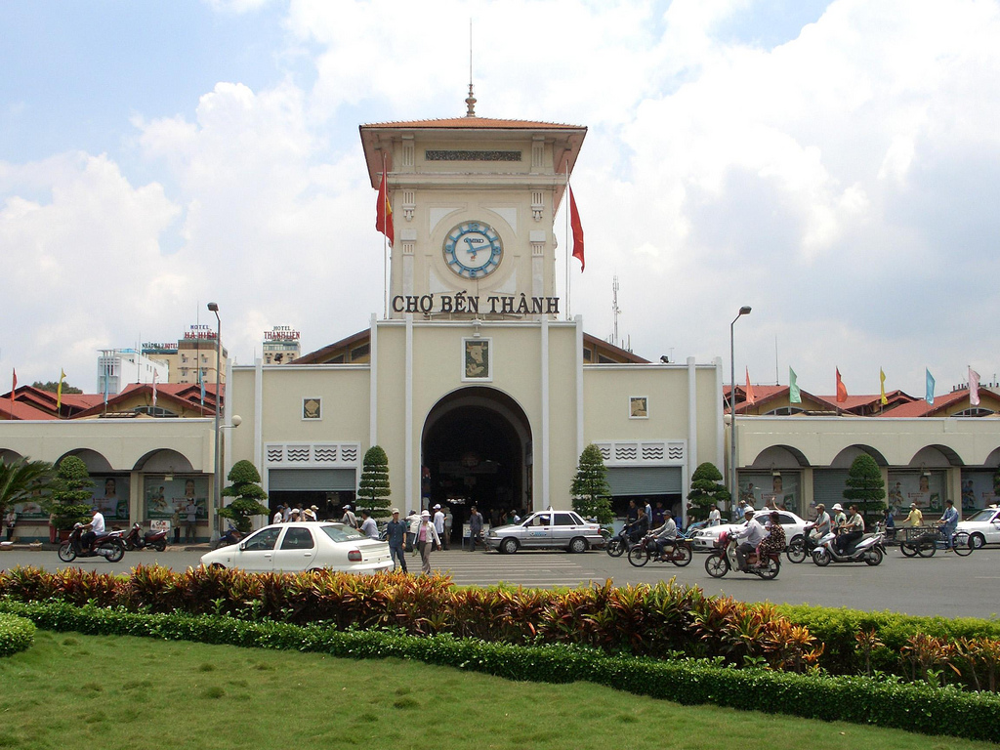

hành phố Hồ Chí Minh (hiện nay vẫn được gọi phổ biến với tên cũ là Sài Gòn) là thành phố đông dân nhất, đồng thời cũng là trung tâm kinh tế, văn hóa, giáo dục quan trọng của Việt Nam. Trên cơ sở diện tích tự nhiên, thì thành phố Hồ Chí Minh là đô thị lớn thứ nhì Việt Nam (sau khi thủ đô Hà Nội được mở rộng). Nếu xét về quy mô dân số, thì thành phố Hồ Chí Minh là đô thị lớn nhất Việt Nam. Hiện nay, thành phố Hồ Chí Minh cùng với thủ đô Hà Nội là đô thị loại đặc biệt của Việt Nam.
Vùng đất này ban đầu được gọi là Prey Nokor, thành phố sau đó hình thành nhờ công cuộc khai phá miền Nam của nhà Nguyễn. Năm 1698, Nguyễn Hữu Cảnh cho lập phủ Gia Định, đánh dấu sự ra đời thành phố. Khi người Pháp vào Đông Dương, để phục vụ công cuộc khai thác thuộc địa, thành phố Sài Gòn được thành lập và nhanh chóng phát triển, trở thành một trong hai đô thị quan trọng nhất Việt Nam, được mệnh danh Hòn ngọc Viễn Đông hay Paris Phương Đông. Sài Gòn là thủ đô của Liên bang Đông Dương giai đoạn 1887-1901. Năm 1949, Sài Gòn trở thành thủ đô của Quốc gia Việt Nam và sau này là Việt Nam Cộng hòa. Kể từ đó, thành phố hoa lệ này trở thành một trong những đô thị quan trọng của vùng Đông Nam Á. Sau khi Việt Nam Cộng hòa sụp đổ trong sự kiện 30 tháng 4 năm 1975, lãnh thổ Việt Nam được hoàn toàn thống nhất. Ngày 2 tháng 7 năm 1976, Quốc hội nước Việt Nam thống nhất quyết định đổi tên Sài Gòn thành "Thành phố Hồ Chí Minh", theo tên vị Chủ tịch nước đầu tiên của Việt Nam Dân chủ Cộng hòa.

Nằm trong vùng chuyển tiếp giữa miền Đông Nam Bộ và Tây Nam Bộ, Thành phố Hồ Chí Minh ngày nay bao gồm 19 quận và 5 huyện, tổng diện tích 2.095,06 km². Theo kết quả điều tra dân số chính thức vào thời điểm 0 giờ ngày 1 tháng 4 năm 2009 thì dân số thành phố là 7.162.864 người (chiếm 8,34% dân số Việt Nam), mật độ trung bình 3.419 người/km². Đến năm 2011 dân số thành phố tăng lên 7.521.138 người. Đến thời điểm 0 giờ ngày 1/4/2014 thì dân số thành phố đạt 7.955.000 người. Tuy nhiên nếu tính những người cư trú không đăng ký thì dân số thực tế của thành phố vượt trên 10 triệu người. Giữ vai trò quan trọng trong nền kinh tế Việt Nam, Thành phố Hồ Chí Minh chiếm 21,3% tổng sản phẩm (GDP) và 29,38% tổng thu ngân sách của cả nước. Nhờ điều kiện tự nhiên thuận lợi, Thành phố Hồ Chí Minh trở thành một đầu mối giao thông quan trọng của Việt Nam và Đông Nam Á, bao gồm cả đường bộ, đường sắt, đường thủy và đường không. Vào năm 2007, thành phố đón khoảng 3 triệu khách du lịch quốc tế, tức 70% lượng khách vào Việt Nam. Các lĩnh vực giáo dục, truyền thông, thể thao, giải trí, Thành phố Hồ Chí Minh đều giữ vai trò quan trọng bậc nhất.
Tuy vậy, Thành phố Hồ Chí Minh đang phải đối diện với những vấn đề của một đô thị lớn có dân số tăng quá nhanh. Trong nội ô thành phố, đường sá trở nên quá tải, thường xuyên ùn tắc. Hệ thống giao thông công cộng kém hiệu quả. Môi trường thành phố cũng đang bị ô nhiễm do phương tiện giao thông, các công trường xây dựng và công nghiệp sản xuất.